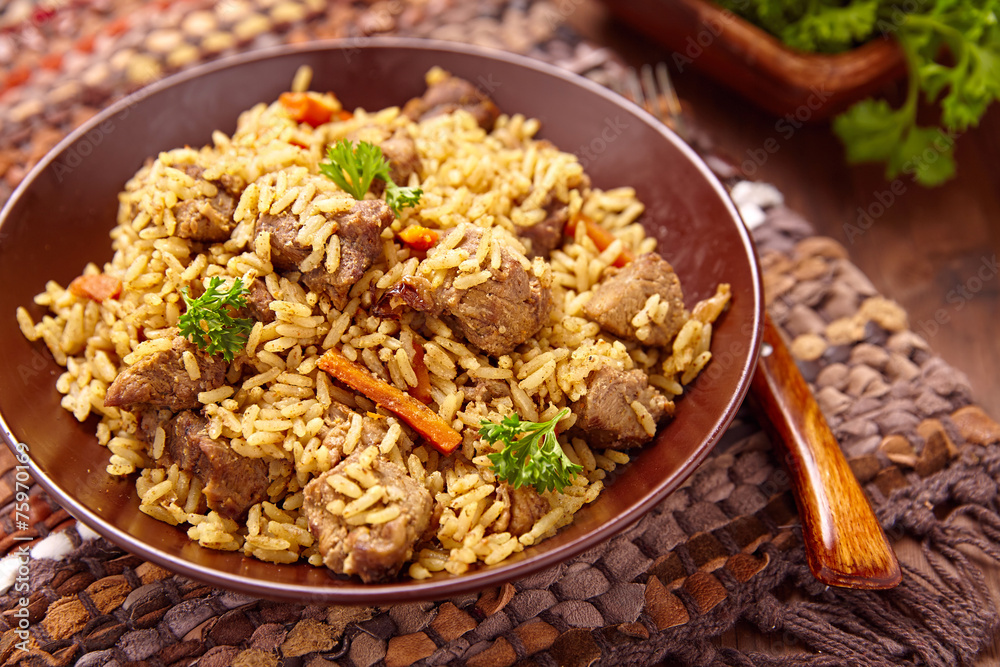

Coast pilau
Home

The coastal emblem delicacy
Meet the most eaten food in the coastal of the three east african countries .
Kenya,Uganda and somalia
ingrendents
- Pilau masala
- curry powder
- sack of rice
- beef
- salt
- potatoes
- shawarma
Steps
- Boil 100 litres of water in a sufuria
- Put the rice in the water after it has attained some hot degrees
- Mix the availabvle ingrendents in a separate pan
- Add the curry powder to enhance taste
- Boil meat in a separate sufuria
- After they are all good mix the meat and the cooked rice
- Serve the emblem delicacy and enjoy the meal